Sinh học · Lớp 10
Hành Trình Vào Tế Bào
Tế bào nhân thực đang hoạt động; phóng liền mạch xuống 222.336 nguyên tử của ribosome thật.
Đi vào tế bào tới từng nguyên tử, mở 2.900 cấu trúc của cơ thể người, dựng lại Thành Cổ Loa theo số đo khảo cổ, cho robot chạy bằng số liệu thật. Bằng tiếng Việt, cho lớp học.
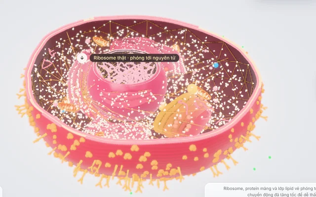
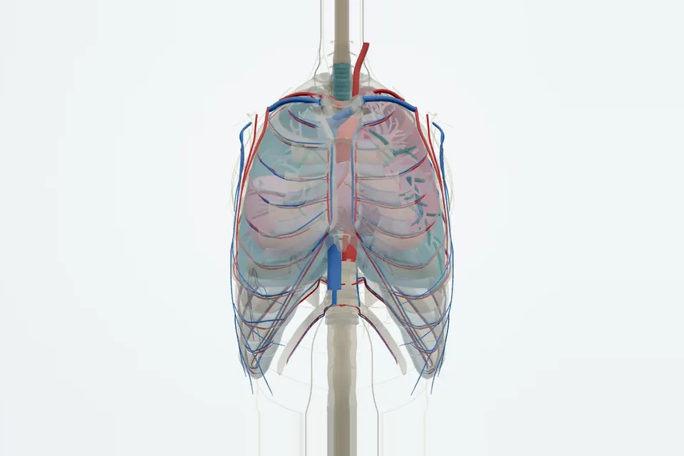
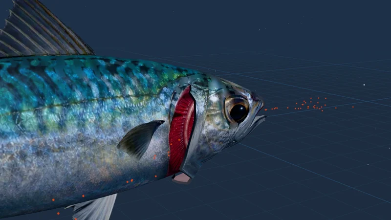

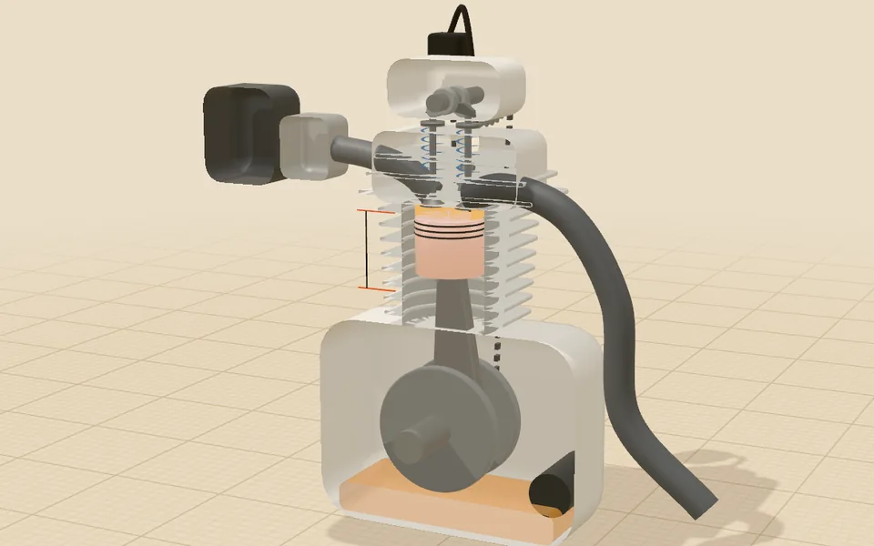
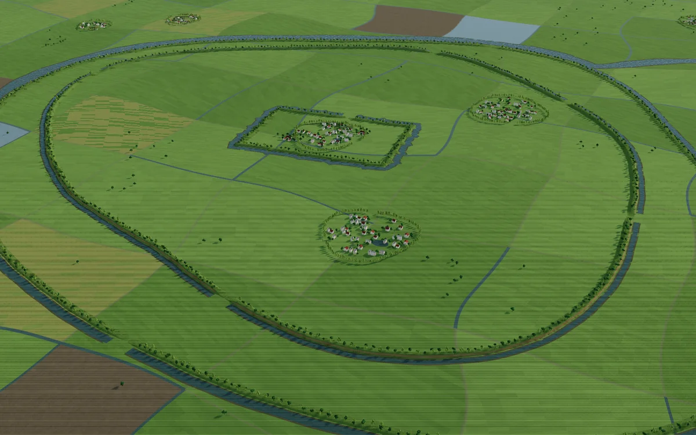
Mỗi bài có chế độ học theo bước và chế độ lên lớp. Bấm vật trong cảnh để xem số đo và nguồn.
Tế bào nhân thực đang hoạt động; phóng liền mạch xuống 222.336 nguyên tử của ribosome thật.
2.900 cấu trúc giải phẫu thật, 140 chuyển động sinh lí, 6 chủ đề hiển vi: tim đập, phổi thở, thận lọc máu.
Bơm miệng–nắp mang khi bơi chậm, ép dòng khi bơi nhanh; cá ngừ không được dừng; máu chảy ngược chiều nước lấy ≈ 75 % ô xi.
Xung nhảy cóc qua eo Ranvier, điện thế màng theo từng pha, synapse giải phóng chất dẫn truyền; phong cách điện ảnh.
Cắt dọc động cơ theo thông số Honda Wave Alpha 110: bốn kì, xupap, trục cam, đồ thị p–V; thử tăng tỉ số nén, tắt bugi.
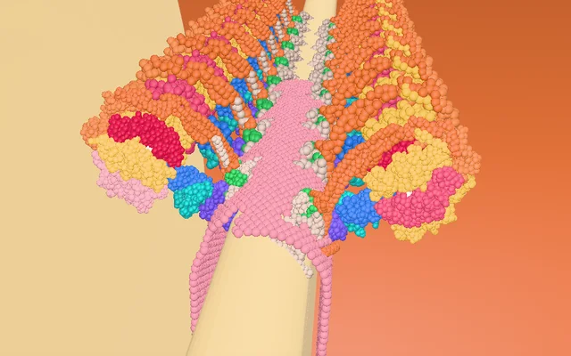
Dòng H⁺ làm vòng c quay, ba vị trí β lần lượt tạo ATP, dựng từ 37.733 nguyên tử thật.
Ba vòng thành đất theo số đo khảo cổ, dòng thời gian từ thế kỷ IV TCN đến nay.
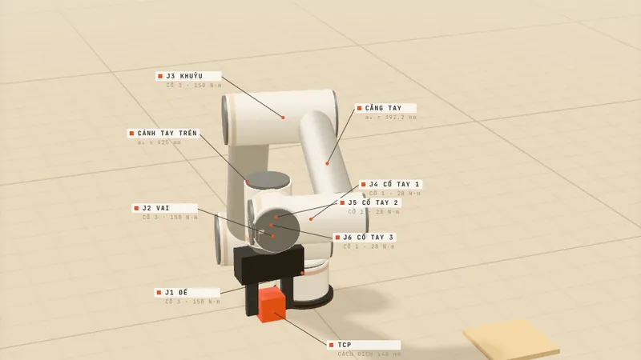
UR5e đúng bảng DH của hãng: động học nghịch 8 nghiệm, Jacobian, điểm kỳ dị.
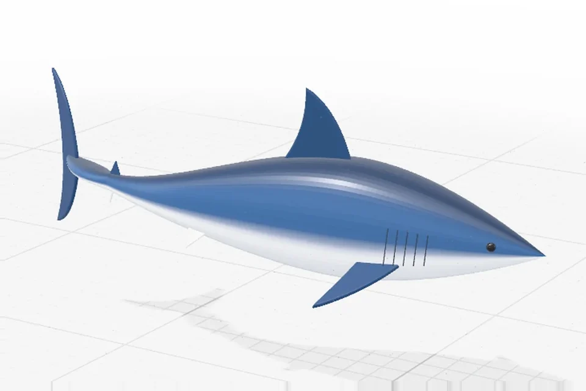
Bơi theo số đo cá mập thật: một đầu vào là tốc độ; tần số vẫy đuôi, sóng thân, số Strouhal, lực cản tăng theo v².
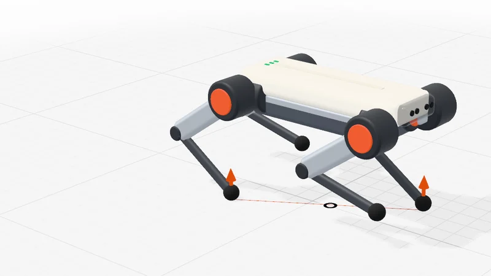
Theo số đo MIT Mini Cheetah: đi bước, đi kiệu, bật nhảy; lực đỡ từng chân, 12 mô men khớp, tách rời và lắp ráp.
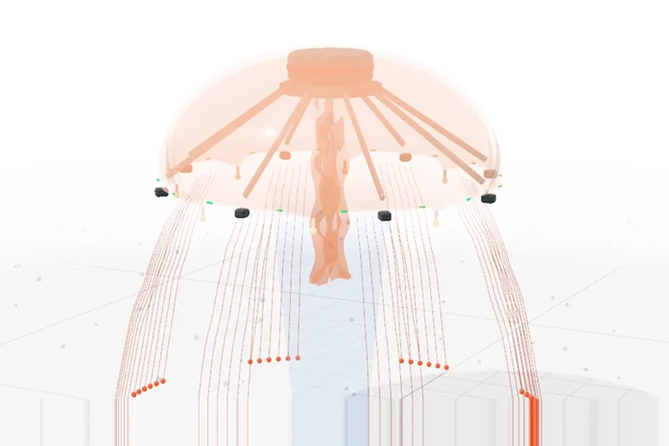
Theo Cyro của Virginia Tech: chuông co đẩy nước, phản lực và động lượng, rhopalia giữ thăng bằng, tế bào gai 700 ns.
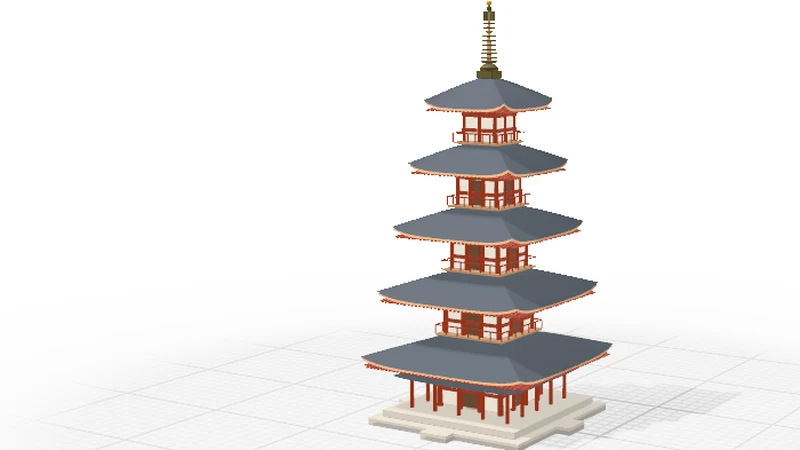
Dựng 52 thao tác theo tám giai đoạn, mặt cắt qua cột tâm; rung nền để thấy dao động riêng 1,1 s và cộng hưởng.
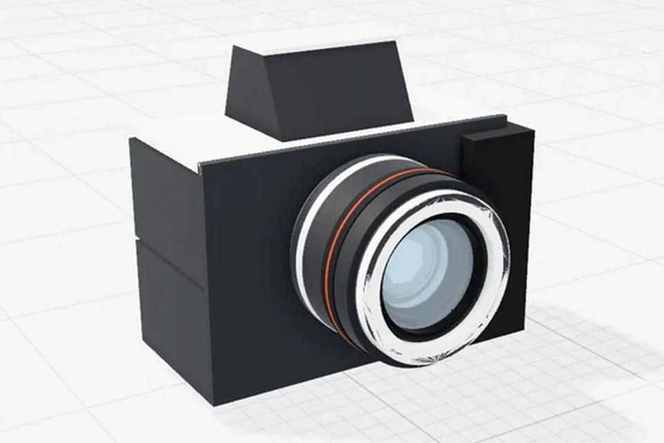
Ống kính Canon 50 mm: ba tia tạo ảnh thật, ngược trên cảm biến; lấy nét là dời thấu kính; khẩu bảy lá; kiểm lại góc nhìn 40° của hãng.
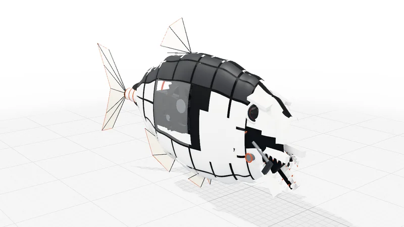
Cú cắn 320 N mạnh nhất từng đo ở cá: hàm dưới là đòn bẩy, F_cắn·d = F_cơ·L_in; răng trong cắn mạnh gấp ba răng ngoài.
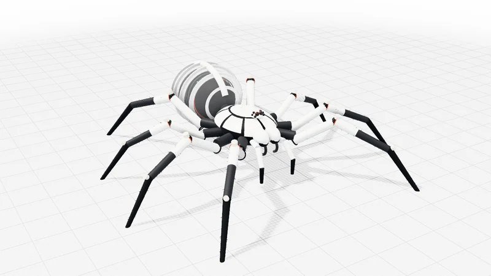
Chân duỗi bằng áp suất như tarantula thật: một bơm, tám chân, cùng một áp suất (Pascal); τ = P·A·r, dáng chạy theo nhiệt độ.
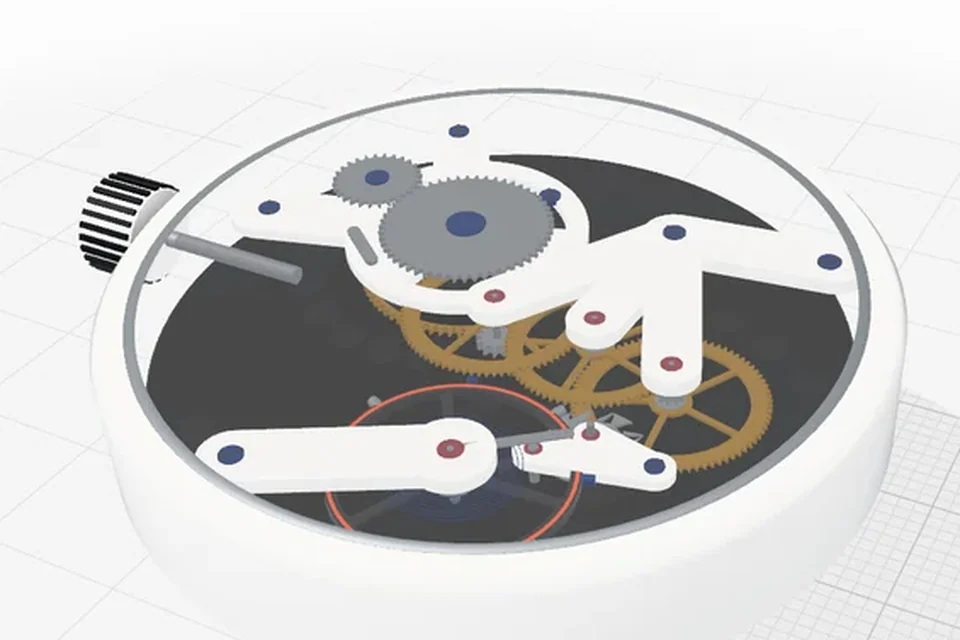
ETA 6497-1 theo tài liệu hãng: bánh lắc dao động điều hoà 2,5 Hz, bộ thoát 15 răng, tỉ số truyền bắt buộc; tháo từng bộ phận.
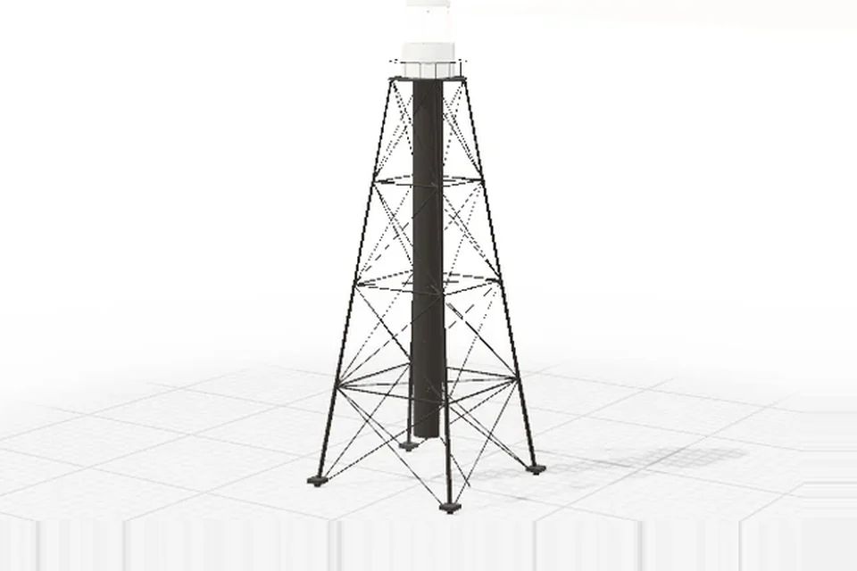
Sanibel 1884: lắp dựng khung giằng chéo, chớp đèn Fl(2) W 10s, tầm nhìn theo độ cong Trái Đất, gió và mô men lật.
Các bài xếp theo thứ tự của chương trình GDPT 2018, kèm yêu cầu cần đạt trích nguyên văn.
Gói dạy thử 45 phút: kịch bản theo phút, phiếu học tập in A4, đáp án. Bản thử, chờ giáo viên bộ môn duyệt.
Vật lí, Hoá học, Sinh học, Địa lí. Mỗi bài đối chiếu với yêu cầu cần đạt của chương trình.